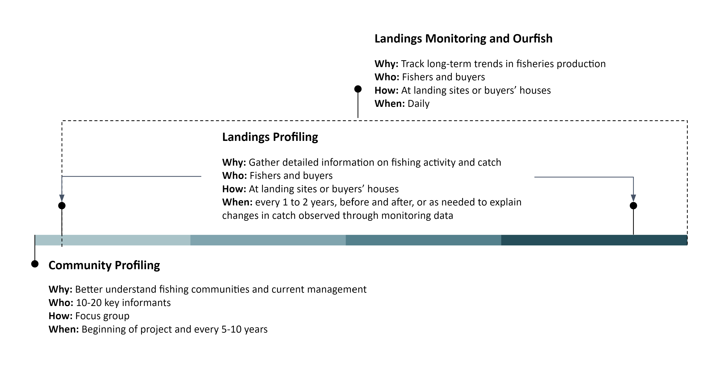
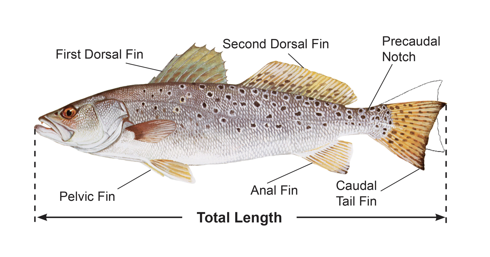
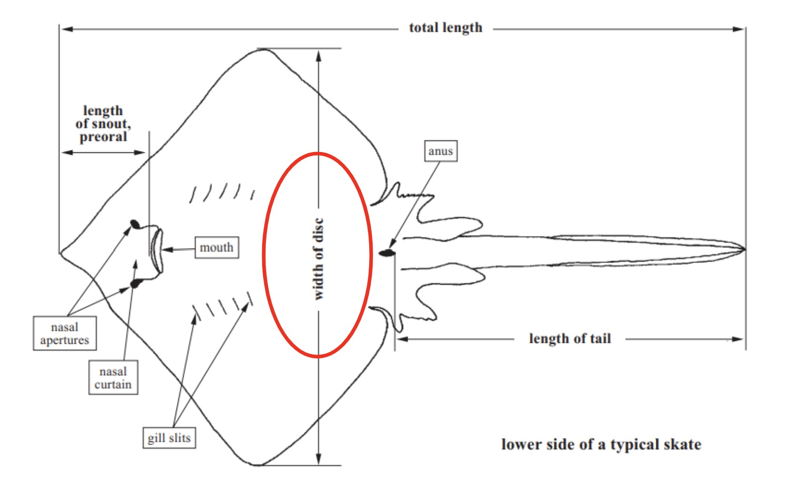
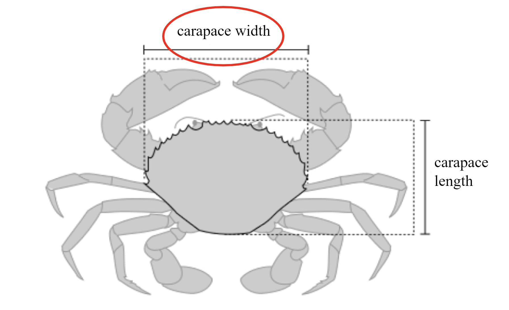
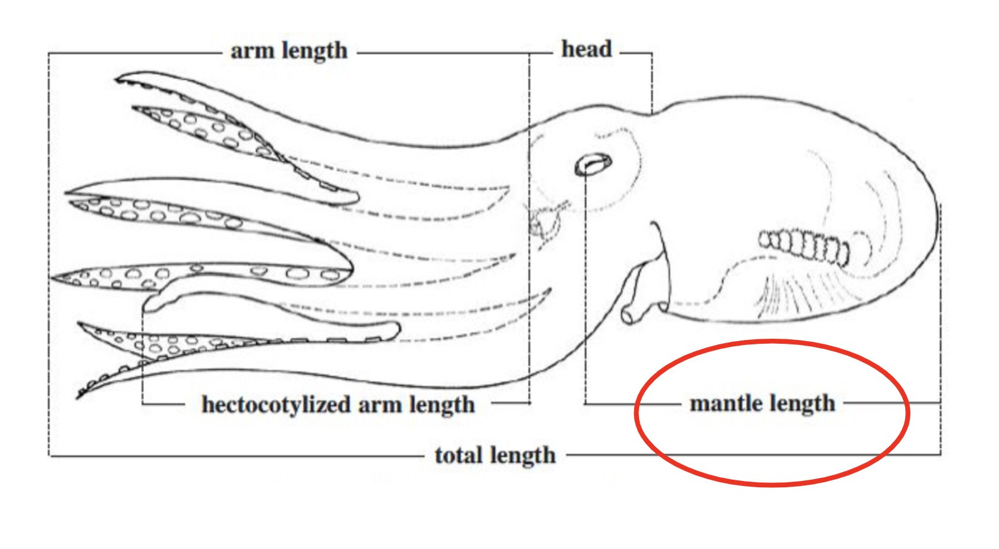
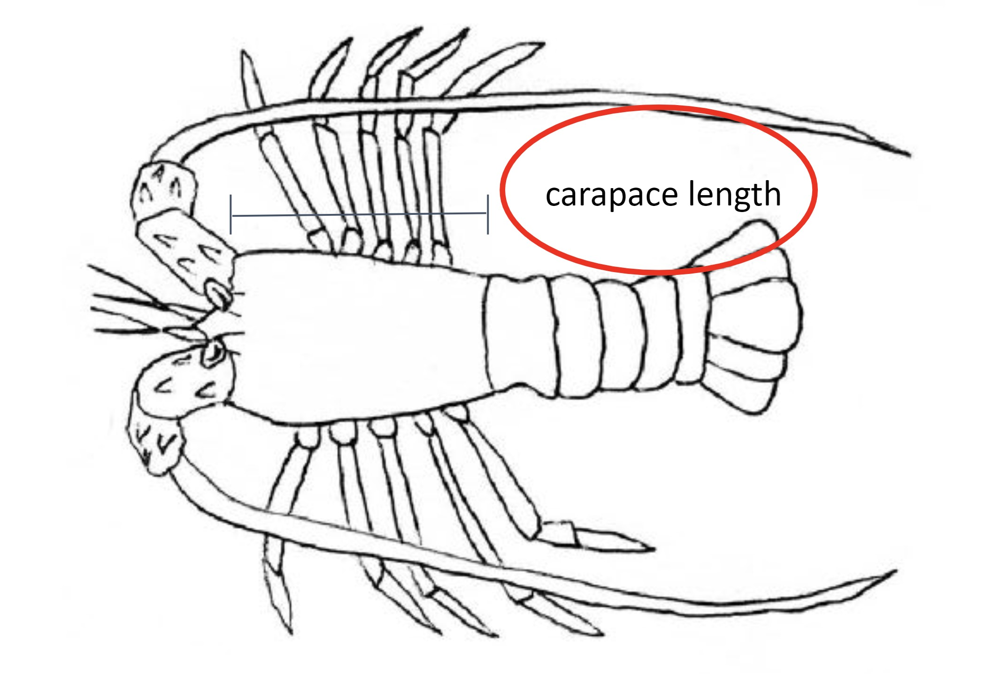
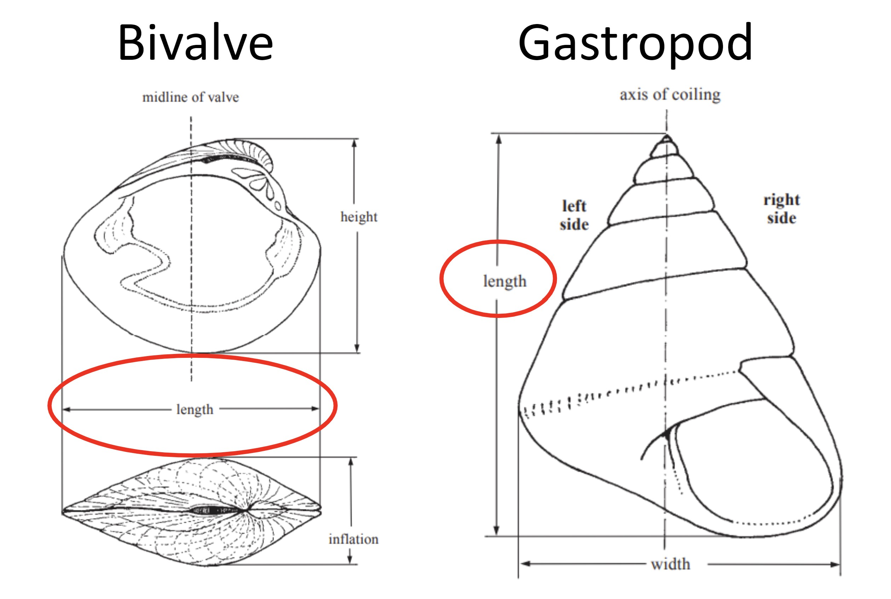
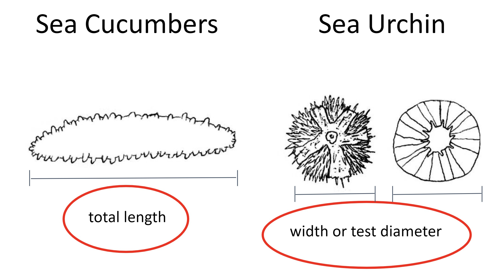
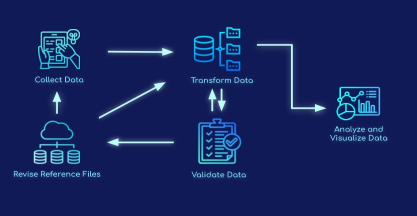

Guide complet
Guide de Collecte de Données sur les Pêches
Guide d’administration des enquêtes pour obtenir des données sur les pêches
Présentation
Ce document fournit des conseils et des recommandations pour l’administration de trois instruments d’enquête afin de saisir des informations sur les communautés de pêcheurs et les pêches dont elles dépendent (figure 1). Les sondages ont été conçus pour aligner le contenu sur la façon dont les données seront utilisées et la fréquence prévue des changements. L’enquête de plus haut niveau, Profilage communautaire, contient des questions qui aident à mieux comprendre l’activité de pêche dans la communauté et les conditions socio-économiques. Il est particulièrement important de comprendre le paysage socio-économique lorsque le travail commence pour la première fois dans une communauté. Les informations recueillies au cours de cette enquête sont essentielles à la conception de stratégies d’engagement communautaire et de plans d’échantillonnage des données. Les enquêtes de profilage et de suivi des débarquements recueillent des données sur les captures débarquées par les pêcheries. Les données de profilage des débarquements sont recueillies moins fréquemment et saisissent des informations sur l’habitat de pêche, le type d’engin,l’effort et la longueur de chaque poisson. L’enquête de surveillance des débarquements, idéalement menée quotidiennement, est une enquête rapide sur les pêches qui recueille le minimum d’informations nécessaires pour suivre les changements de volume et de valeur des captures, tels que les espèces, le poids, le nombre et le prix.

Figure 1: Calendrier d’administration des trois différents instruments d’enquête sur une échelle d’un an.
Détails de l’Enquête
Enquête de Profilage Communautaire
Objectif
Comprendre le paysage général de la communauté et les pêcheries opérant au sein de la communauté.
Données Collectées
Nombre de membres de la communauté, pêcheurs, négociants en poisson, femmes
Paysage général des pêcheries opérant dans la communauté
Engins utilisés; espèces ciblées; habitat pêché; saisons; navires
Informations sur l’effort et le coût de la pêche
Perceptions sur les pêches et les conditions de l’habitat, les menaces
Informations sur la gestion/réglementation actuelle des pêches
Identification (par cartographie) des zones de pêche, habitats et sites de débarquement importants
Public Cible
10 à 20 informateurs clés au sein de la communauté, à savoir des dirigeants communautaires, des pêcheurs respectés, des négociants en poisson et des femmes.
Fréquence et Calendrier
Lorsque les travaux commencent dans une nouvelle communauté de pêcheurs, la réalisation de l’enquête de profilage communautaire et de l’exercice de profilage initial fournit des données de base et des informations pertinentes pour concevoir les efforts de conservation et de gestion les plus appropriés pour la communauté. Répéter l’Enquête de profilage communautaire peut aider à documenter les changements importants qui se produisent au fil du temps.
Méthodologie
L’information peut être recueillie au moyen d’enquêtes menées par des tiers (c.-à-d. recensement, dossiers du ministère des Pêches, etc.), de groupes de discussion composés de 10 à 20 membres clés de la communauté ou d’informateurs clés. Les dirigeants communautaires ainsi qu’une variété de pêcheurs et de commerçants de poisson bien informés et diversifiés (y compris les femmes et les jeunes) seraient les participants idéaux à inclure dans le groupe de discussion. Pour animer les groupes de discussion, il est recommandé d’avoir, au minimum, un animateur et un preneur de notes. Lors du groupe de discussion, il est également recommandé que les participants fournissent une liste des pêcheurs de la communauté et leurs coordonnées, qui peuvent ensuite être contactés pour administrer les enquêtes auprès des ménages. S’il n’est pas possible de mener l’Enquête de profilage communautaire dans un format de groupe de discussion, une alternative consiste à administrer les mêmes questions que les enquêtes individuelles avec des informateurs clés et à mettre en commun les réponses. Les questions incluses dans le sondage de profilage communautaire et les recommandations pour la tenue de discussions de groupe de discussion se trouvent à l’annexe A ci-dessous.
Enquête de Surveillance des Débarquements
Objectif
Saisir les données clés nécessaires pour calculer des indicateurs simples de la santé des pêches basés sur la longueur et pour suivre les changements dans la production, la valeur et la composition des pêches.
Données Collectées
Date de débarquement
Lieu d’atterrissage
Nom du commerçant de poisson
Nom du pêcheur
Effort de pêche (jours de pêche / glanage)
Identité de l’espèce (noms locaux, communs, scientifiques)
Nombre total
Poids total
Prix total
Raison capture totale non vendue, le cas échéant
Public Cible
Les pêcheurs lorsqu’ils débarquent leurs prises ou chez un acheteur de poisson/marché.
Fréquence et Calendrier
L’enquête de surveillance des débarquements devrait être effectuée quotidiennement ou aussi souvent que possible. Effectuer des relevés de surveillance des débarquements avant et après la mise en œuvre pour évaluer les effets des fermetures de pêcheries ou d’autres stratégies de gestion. Nous recommandons de collecter les données 30 jours avant et après les périodes de fermeture temporaire. Pendant les sept premiers jours des périodes d’échantillonnage, nous recommandons que les enquêteurs effectuent quotidiennement des relevés de surveillance des débarquements. Si possible, continuez la surveillance quotidienne pendant toute la période de 30 jours. Si cela n’est pas possible, interrogez au moins 80% des jours tous les 30 jours. Nous recommandons également de sonder 80% ou plus de tous les pêcheurs débarquant des prises un jour donné avant ou après la fermeture. Répartir les efforts d’enquête représentatifs entre les pêcheurs en bateau et les pêcheurs non en bateau. Recueillir des données auprès de tous les pêcheurs débarquant dans le village, qu’ils pêchent ou non dans le site de fermeture.
Pour les fermetures à plus long terme, assurez-vous que les données sont recueillies au cours du même mois pour chaque année afin de saisir les changements au cours de la période de fermeture. Si cela n’est pas possible, nous recommandons de collecter des données au cours du même mois avant et après la fermeture. Comme indiqué ci-dessus, nous recommandons de surveiller au moins 80% de la journée dans le mois et 80% des pêcheurs débarquant des prises chaque jour.
Méthodologie
À l’aide du formulaire Kobo, rencontrez les pêcheurs sur les sites de débarquement/chez les acheteurs pour enregistrer leurs prises.
Enquête sur le Profilage Des Débarquements
Objectif
Comprendre les tendances des prises observées.
Données Collectées
Date de débarquement
Lieu d’atterrissage
Zone de pêche principale
Nom du commerçant de poisson
Nom du pêcheur
Effort de pêche (heures et jours de pêche / glanage)
Type de bateau (numéro d’immatriculation du bateau, numéro d’équipage)
Identité de l’espèce (noms locaux, communs, scientifiques)
Engrenages utilisés
Habitat pêché
Nombre total
Poids total
Prix total
Raison capture totale non vendue, le cas échéant
Échantillons de poids et de longueurs individuels (figures 2-8)
Données d’échantillonnage spécifiques au partenaire (sexe, qualité des prises, gonades, stylet, # pièges, etc.)
Public Cible
Un échantillon représentatif des captures au sein de la communauté. Enregistrez au moins 50 échantillons (idéalement 100) pour chaque espèce cible, représentant divers types d’engins et profils de pêcheurs.
Fréquence et Calendrier
Cette enquête devrait d’abord être menée au début de l’implication dans une communauté, puis réalisée tous les un à deux ans, avant et après la mise en œuvre de la stratégie de gestion, ou au besoin pour expliquer les déclins observés grâce aux données de surveillance. À l’aide du formulaire Kobo, rencontrez les pêcheurs sur les sites de débarquement pour échantillonner leurs prises et enregistrer leur activité de pêche.
Méthodologie
À l’aide du formulaire Kobo, rencontrez les pêcheurs sur les sites de débarquement pour échantillonner leurs prises et enregistrer leur activité de pêche.
Standardisation des mesures: Type de longueur à mesurer par groupe d’espèces

Figure 2: La longueur totale doit être utilisée pour mesurer les poissons à nageoires, les requins et les anguilles (AFS).

Figure 3: La largeur du disque doit être utilisée pour mesurer les rayons et les patins.

Figure 4: La largeur de la carapace doit être utilisée pour mesurer le crabe (Suryandari et. al, 2018).

Figure 5: La longueur du manteau doit être utilisée pour mesurer le poulpe et le calmar (FAO).

Figure 6: La longueur de la carapace doit être utilisée pour mesurer les crevettes et le homard (Hart et al. 2001).

Figure 7: La longueur doit être utilisée pour mesurer les bivalves et les gastéropodes.

Figure 8: La longueur totale doit être utilisée pour mesurer les concombres de mer. La largeur ou le diamètre d’essai doit être utilisé lors de la mesure des oursins.
Aperçu du Flux de Données
La collecte, la validation, la transformation et la visualisation des données sont les quatre principales composantes du système de données. Les principales applications logicielles utilisées sont KoboToolBox, Smartsheet, PostgreSQL et R.
KoboToolBox est un logiciel gratuit et open source qui constitue une boîte à outils puissante pour la collecte de données accessible dans des environnements difficiles et sur plusieurs plates-formes, telles que des appareils mobiles, des ordinateurs et du papier. Les enquêteurs recueillent des données sur les conditions socioéconomiques et écologiques essentielles pour évaluer les communautés et les statuts des pêcheries au moyen des questionnaires d’enquête KoboToolBox. Smartsheet est une plateforme de gestion collaborative du travail qui fournit une interface flexible et intuitive permettant aux organisations de planifier, suivre, automatiser et gérer divers projets et processus en temps réel. Les fichiers de référence utilisés pour remplir les formulaires d’enquête et connecter des données supplémentaires aux ensembles de données maîtres sont gérés dans Smartsheet. De plus, les données sont validées dans Smartsheet. PostgreSQL est un système de gestion de base de données gratuit et open source utilisé comme entrepôt de données pour de nombreuses applications Web, analytiques et géospatiales tout en stockant des données non structurées et structurées dans un seul produit. R est un environnement logiciel libre et open source et un langage de programmation largement utilisé pour la science des données, le calcul statistique et la visualisation des données. Les tableaux de bord de données sont créés à l’aide du package Shiny du langage de programmation R et hébergés sur shinyapps.io, une plate-forme en tant que service (PaaS) pour l’hébergement d’applications Web brillantes (applications).

Figure 9: Diagramme de flux de données.
La collecte de données implique la collecte et la mesure systématiques d’informations provenant de sources pertinentes sur les variables d’intérêt pour la prise de décision, la planification stratégique, les évaluations des résultats et à d’autres fins. En incorporant des données quantitatives et qualitatives dans les questionnaires d’enquête, nous développons une compréhension plus approfondie des conditions économiques et écologiques associées aux communautés de pêcheurs et aux stratégies de gestion changeantes. La validation des données fait référence à l’application de méthodes pour mesurer les conditions des données collectées et déterminer si les données collectées répondent aux critères de qualité définis, tels que l’exactitude, la cohérence, la pertinence, l’exhaustivité et l’unicité. La transformation des données convertit, nettoie et structure les données brutes en un format utilisable qui peut être analysé et évalué pour la prise de décision. L’analyse et la visualisation des données impliquent la conception et la création de graphiques accessibles ou d’affichages visuels d’informations pour communiquer efficacement les données qualitatives et quantitatives complexes précédemment collectées, vérifiées et transformées à travers les publics cibles. Nous avons décrit le processus de flux de données ci-dessous:
Les données sont collectées via les formulaires d’enquête KoboToolBox.
Les données sont extraites dans la base de données.
Si l’enquêteur a sélectionné des choix de réponses préremplis dans les enquêtes, les données n’ont pas besoin d’être validées et peuvent passer directement au processus d’analyse et de visualisation des données.
Si l’enquêteur saisit manuellement des données telles qu’un nouveau pêcheur, un acheteur, un collecteur de données, un site de débarquement ou une espèce, les données sont vérifiées dans Smartsheet avant d’être incluses dans le tableau de données final et visualisées dans le tableau de bord. Les chefs d’équipe sur le terrain sont informés par e-mail lorsque les données sont prêtes pour la validation. Les chefs d’équipe vérifieront manuellement les tableaux de contrôle de la qualité pour confirmer que les informations nouvellement ajoutées sont valides.
Après validation, les nouvelles données sont envoyées à la fois aux fichiers de référence et à la base de données pour une transformation finale avant analyse et visualisation.
Une fois les données envoyées aux fichiers de référence, les chefs d’équipe seront informés par e-mail si des informations supplémentaires sont nécessaires dans les fichiers de référence.
Les fichiers de référence mis à jour sont ensuite téléchargés sur la plateforme KoboToolBox pour être inclus dans les formulaires.
Les données mises à jour des fichiers de référence sont également utilisées dans le processus de transformation des données pour joindre des champs de données supplémentaires tels que les coordonnées et le sexe.
Les dernières étapes du processus de transformation des données aboutissent à des tableaux de données maîtres qui sont utilisés pour l’analyse et la visualisation des données dans les tableaux de bord de données.
Les tableaux de bord de données (c’est-à-dire les applications brillantes) se connectent directement à la base de données, extrayant les données les plus à jour disponibles, offrant ainsi aux partenaires un accès quasi immédiat aux données brutes et résumées.
Sécurité des Données
Vous trouverez ci-dessous une liste de plates-formes logicielles sur lesquelles les données peuvent être stockées et déplacées en transit à partir de la base de données. Les informations sur la sécurité des données pour chaque plate-forme externe sont disponibles sur le site Web spécifique à la plate-forme lié ici.
Des procédures de sécurité supplémentaires ont été mises en œuvre, en plus des mesures de sécurité des données fournies par les plateformes logicielles susmentionnées. Tous les comptes sur toutes les plateformes logicielles utilisées sont protégés par un mot de passe.
Nous utilisons Github comme système de contrôle de version pour les produits codés. Par défaut, tous les dossiers et projets contenant des données sur la pêche et les données socio-économiques sont privés et uniquement accessibles au personnel et aux entrepreneurs.
À partir de n’importe quelle plate-forme de données partagées (par exemple, les applications Shiny), l’authentification de l’utilisateur est requise pour afficher ou télécharger des données, en fonction de l’accord de partage de données choisi par chaque organisation partenaire. Cela inclut la vérification des utilisateurs avant d’autoriser la visualisation ou le téléchargement des données, la connexion des utilisateurs aux plates-formes de visualisation des données et la gestion régulière des utilisateurs vérifiés.
L’accès aux documents Smartsheet (par exemple, les fichiers de référence, les fiches de validation des données) est limité au personnel identifié par chaque organisation, et chaque partenaire ne peut consulter que ses propres informations spécifiques au partenaire. Les exceptions à cela incluent le personnel qui contrôle et assiste les flux de travail de qualité des données, et le personnel de Blue Ventures qui aide les partenaires avec les flux de travail d’information dans Smartsheet.
Confidentialité des Données
Les informations personnelles identifiables (IPI) et les données sur les prises de pêche appartiennent aux pêcheurs et aux acheteurs de poisson et ne seront jamais partagées sans consentement préalable. Pour protéger la vie privée des pêcheurs, des acheteurs et des collecteurs de données, tous les noms sont anonymisés en numéros d’identification aléatoires. Par conséquent, toutes les données partiellement ou entièrement accessibles au public n’incluront que les numéros d’identification numériques aléatoires. Voir la section sur le partage de données pour une explication complète des accords de partage de données.
Les données considérées comme des IPI comprennent:
Noms des pêcheurs, des acheteurs et des collecteurs de données
Noms des répondants pour toutes les enquêtes
Partage des Données
Le système de données sur les pêches est conçu pour rationaliser l’utilisation de vos données et fournir une plate-forme pour votre engagement actif dans des efforts plus larges de gestion et de conservation des pêches. Les données agrégées recueillies en collaboration entre les partenaires peuvent fournir des informations puissantes pour surveiller la pêche, évaluer les stratégies de gestion, guider la prise de décision aux niveaux local et national, comprendre les changements régionaux et identifier les services financiers potentiels.
Nous reconnaissons l’importance cruciale de la propriété et de l’utilisation des données pour tous les partenaires contributeurs. Notre objectif est de vous offrir une flexibilité dans la gestion et la détermination de la manière dont vos données sont utilisées. En sélectionnant l’un des trois niveaux d’autorisation d’utilisation des données, vous pouvez réguler la mesure dans laquelle vos données sont partagées avec d’autres utilisateurs. Vous pouvez personnaliser les niveaux d’autorisation en fonction des types de données et, surtout, vous avez la liberté d’ajuster votre niveau d’autorisation de données à tout moment. Les informations personnelles identifiables (IPI) et les données sur les prises de pêche appartiennent aux pêcheurs et aux acheteurs de poisson et ne seront jamais partagées sans consentement préalable. En choisissant un niveau d’autorisation d’utilisation des données, vous confirmez que des autorisations individuelles ont été obtenues à la fois des pêcheurs et des acheteurs de poisson.
Toutes les données sont actuellement définies sur le niveau 1-Privé. Les utilisateurs auront la possibilité d’ajuster leurs niveaux d’autorisation au besoin.
Niveau 1-Privé
Les données sont strictement destinées aux fins internes du contributeur de données d’origine.
Les données pourront être téléchargées par le contributeur de données d’origine.
Les données ne seront pas incluses dans les analyses régionales fournies sur le tableau de bord.
Le partage ou la distribution non autorisés des données à des parties externes est strictement interdit.
Niveau 2-Partager avec d’autres contributeurs de données
Les données au niveau du trajet sont disponibles pour téléchargement par d’autres contributeurs de données.
Des résumés de données et des visualisations seront disponibles pour les autres contributeurs de données.
Les données seront incluses dans les analyses régionales sur le tableau de bord.
Niveau 3-Partager avec tous les utilisateurs
Les données de niveau de trajet sont disponibles pour tous les utilisateurs à télécharger.
Des résumés de données et des visualisations seront disponibles pour tous les utilisateurs.
Les données seront incluses dans les analyses régionales sur le tableau de bord.
Le contributeur de données d’origine peut spécifier toute limitation ou condition d’utilisation applicable à tous les utilisateurs.
Validation des Données Nouvelles et marquées
Dans les enquêtes, certaines questions permettent aux enquêteurs d’ajouter un nouveau pêcheur, acheteur, collecteur de données, site de débarquement, espèce ou “autre.” Les informations de ces options sont de nouveaux points de données et doivent être vérifiées avant d’être poussées vers l’ensemble de données final, visualisées dans le tableau de bord et ajoutées aux fichiers de référence. Il existe également des contraintes sur le poids, le prix et la longueur d’une espèce, et si les données collectées sont inférieures ou supérieures à ces contraintes, ces valeurs sont signalées pour examen. Les contraintes de poids et de prix sont définies par les partenaires dans le min_max_ref. Les contraintes de longueur des espèces sont fixées par l’équipe à l’aide de paramètres biologiques.
Toutes les données qui transitent par le système de données sur les pêches sont validées dans Smartsheet. Toutes ces entrées nouvelles ou signalées sont envoyées au tableau de validation de Smartsheet pour que les équipes de terrain les valident. Les tableaux de validation sont spécifiques aux partenaires et sont accessibles via des demandes de mise à jour envoyées par e-mail ou en visitant les liens d’affichage dynamique qui vous sont fournis. Les chefs d’équipe sur le terrain seront informés par e-mail lorsque les données doivent être validées dans les tableaux de validation. Une fois les données vérifiées dans les tableaux, nous ajouterons de nouvelles informations au fichier de référence et apporterons les corrections nécessaires à l’ensemble de données maître.
Des instructions spécifiques, étape par étape, sur la façon d’effectuer la validation des données dans Smartsheet sont disponibles sur la page Validation des données.
Collecte de Données
Blue Ventures administre toutes les enquêtes via les formulaires Kobo Toolbox partageables via un compte Kobo Toolbox. Vous pouvez créer un compte sur https://kf.kobotoolbox.org/accounts/signup/. Veuillez contacter l’équipe avec votre nom d’utilisateur et les détails de votre compte. Une fois les sondages partagés, accédez aux formulaires Kobo via l’application gratuite KoboCollect pour téléphone mobile Android ou via le formulaire Web Enketo. Des instructions détaillées sur la configuration d’un compte Kobo, la collecte de données et la soumission de données sont disponibles sur la page de configuration Kobo. Utilisez un code QR pour configurer tous les appareils après avoir configuré manuellement le premier téléphone ou tablette pour configurer plusieurs téléphones ou tablettes sous un seul compte de collecte de données. La configuration manuelle du premier appareil nécessite l’URL du serveur Kobo, le nom d’utilisateur et le mot de passe. L’URL du serveur Kobo est https://kc.kobotoolbox.org. Vous trouverez plus d’informations sur la configuration de la collecte de données avec Kobo, y compris sur la configuration de plusieurs appareils de collecte de données via un code QR, sur https://support.kobotoolbox.org/.
Une fois que vous avez téléchargé KoboCollect, ouvrez l’application et entrez l’URL du serveur, le nom d’utilisateur et le mot de passe pour connecter votre application KoboCollect au serveur KoboToolbox. La connexion de l’application KoboCollect au serveur KoboToolbox vous permet de télécharger des formulaires déployés depuis KoboToolbox sur votre appareil mobile et de renvoyer les données collectées via l’application au serveur. Sur l’écran d’accueil, sélectionnez “Obtenir un formulaire vierge.” Une liste de tous vos formulaires d’enquête déployés devrait apparaître. Appuyez sur “Tout sélectionner” pour que tous les formulaires d’enquête soient envoyés à l’application, ou sélectionnez ceux que vous souhaitez avoir en les sélectionnant manuellement. Cliquez ensuite sur ” Être sélectionné.”Pour déployer l’enquête, sélectionnez” Remplir le formulaire vide.”
Bien que le formulaire Web soit automatiquement mis à jour lorsqu’une nouvelle version d’enquête est disponible, les utilisateurs doivent configurer eux-mêmes la “mise à jour automatique” dans l’application. La mise à jour régulière des enquêtes dans l’application garantit l’utilisation de la dernière version du formulaire et ne pose pas de problèmes de pipeline de données. Vous pouvez configurer la mise à jour automatique dans l’application en accédant à “Paramètres” et “Gestion des formulaires.”Vous trouverez plus d’informations sur la mise à jour automatique des sondages dans l’application sur la page de configuration de Kobo. Il est important de noter qu’une connexion est requise pour que l’application récupère la version la plus récente du sondage, même avec les paramètres de mise à jour automatique activés. Par conséquent, conseillez aux enquêteurs d’avoir une connexion Internet avant d’effectuer des travaux sur le terrain afin que KoboCollect puisse extraire la version la plus récente.
Après la collecte des données, les enquêtes soumises via le formulaire Web seront automatiquement soumises au serveur une fois que le collecteur de données aura cliqué sur le bouton “Soumettre”. Les données collectées via l’application KoboCollect sont d’abord enregistrées dans l’application dans un lieu de stockage, puis transmises au serveur. Les sondages complétés restent en attente avant d’être soumis au serveur afin que les collecteurs de données puissent apporter des modifications au sondage après la collecte des données, ou s’il n’y a pas de connexion Internet, l’application peut enregistrer les sondages, puis les envoyer au serveur une fois la connexion Internet établie. Plus précisément, lorsque l’enquête est terminée, l’utilisateur clique sur “Enregistrer le formulaire et quitter”, en s’assurant que “Marquer le formulaire comme finalisé” est également coché. “Modifier le formulaire enregistré” stocke automatiquement le formulaire enregistré. Le collecteur de données peut apporter les modifications nécessaires et sélectionner ” Enregistrer le formulaire et quitter.”L’écran d’accueil comporte également un bouton appelé “Envoyer le formulaire finalisé.”Appuyez sur Sélectionner tout (ou sélectionnez ceux que vous souhaitez télécharger) , puis appuyez sur” Envoyer sélectionné.”Sélectionnez” Afficher le formulaire envoyé ” pour vous assurer de télécharger correctement les formulaires et vous devriez maintenant pouvoir afficher tous les formulaires soumis.
Un système central de stockage des données est lié aux données Kobo, et des analyses et visualisations automatisées seront disponibles via un tableau de bord standardisé. Les données brutes sont sauvegardées dans la base de données KoboToolbox et seront disponibles par téléchargement ou par lien direct vers une autre base de données ou un entrepôt de données.
Traductions
Les traductions pour toutes les langues sont terminées en éditant les feuilles de traduction dans Smartsheet. Si vous constatez qu’une traduction doit être mise à jour ou qu’elle est incorrecte dans les enquêtes, veuillez mettre à jour directement la traduction correspondante dans la feuille Smartsheet appropriée. Si l’équipe a besoin de nouvelles traductions, les partenaires recevront une notification de Smartsheet.
Fichiers de Référence
Les fichiers de référence sont spécifiques aux partenaires ou aux pays et contiennent des informations complètes sur les niveaux administratifs des communautés de pêcheurs( pays, province, district, village), les sites de débarquement, les pêcheurs, les acheteurs, les collecteurs de données, les données sur les espèces, les zones de gestion, les types d’habitats, les types d’engins et les organisations partenaires. Certaines informations remplissent les listes déroulantes dans les enquêtes, et certaines sont jointes à l’ensemble de données principal après la collecte des données. Les nouvelles informations doivent être ajoutées directement aux fiches de référence.
Des instructions spécifiques, étape par étape, sur la façon de mettre à jour les fichiers de référence dans Smartsheet se trouvent sur la page Fichiers de référence.
Annexe A: Guide de discussion des Groupes de discussion
Considérations importantes avant de procéder à un profilage ou à des enquêtes sur les pêches
Relation et confiance
Établir des relations et gagner la confiance de la communauté est une première étape importante avant de poser des questions sur les informations sur les pêches. La première étape pour établir des relations et gagner la confiance de la communauté consiste à vous présenter, votre organisation et le but de la réalisation du profilage des pêches.
Préparation
La préparation est importante dans la conduite de chaque méthode d’enquête, car une bonne préparation vous donnera confiance en l’efficacité de chaque méthode que vous appliquerez.
Temps de collecte des informations
Ajuster le temps de réalisation de chaque méthode au temps du répondant potentiel ou du groupe communautaire ciblé.
Répondant
Il est essentiel de comprendre les répondants potentiels que vous rencontrerez lors de l’établissement du profil des pêches pour mener des enquêtes. Les groupes ou les personnes qui participeront à l’enquête devraient recevoir une notification préalable. Par conséquent, la présentation de leaders communautaires influents doit faire partie du travail de pré-enquête.
Logistique
Chaque méthode a des besoins logistiques et matériels. Assurez-vous que les ressources et l’équipement nécessaires pour chaque méthode de profilage des pêches ont été préparés.
Liste de contacts des personnes clés
Enregistrez une liste de contacts de personnes clés sur votre téléphone et disposez également d’une version imprimée pour la sauvegarde.
Santé et sécurité
Assurez-vous que vous êtes en bonne condition pour effectuer le profilage des pêches. Apportez une trousse de premiers soins essentielle.
Orientation des Discussions de Groupe de Discussion
Ce qui suit contient des conseils et des recommandations sur la conduite d’un groupe de discussion pour saisir les informations de profilage communautaire. Il est recommandé de tenir une séance de groupe de discussion pour encourager le dialogue, saisir une diversité d’opinions et commencer à établir des relations avec des membres importants de la communauté. Cependant, dans le cas où un groupe de discussion n’est pas possible, l’enquête de profilage communautaire peut être menée sous forme d’entretiens individuels avec des parties prenantes importantes à l’aide du formulaire Kobo “Enquête de profilage communautaire”. Dans l’ensemble, l’objectif de l’exercice de profilage communautaire, que ce soit sous forme de groupe de discussion ou d’entrevue individuelle, est de comprendre le paysage général de la communauté et les pêcheries opérant au sein de la communauté.
I. Avant de diriger un groupe de discussion
Avant d’organiser un groupe de discussion officiel sur le profilage des pêches, il est recommandé de tenir des conversations informelles et d’observer les participants. Cette méthode implique de passer du temps, d’établir des relations et de comprendre la pêche en utilisant une conversation informelle et l’observation participante.
Une conversation informelle est importante pour mieux comprendre le contexte général des pêches avant de mener une discussion de groupe de discussion. Utilisez cette méthode comme l’un des points de départ pour formuler le contenu de la discussion de groupe de discussion. Cette méthode vous permettra d’apprendre à connaître la communauté des pêcheurs, de commencer à nouer des relations et de gagner la confiance.
Conseils recommandés pour mener des conversations informelles:
Respectez les différences culturelles. Observez les normes sociales telles que les salutations acceptables, les codes vestimentaires et respectez les pratiques religieuses. Soyez poli, humble et écoutez les opinions des parties prenantes sans imposer la vôtre. Rester au sein d’une communauté, établir des relations et partager des repas peut aider à instaurer la confiance.
Passez du temps avec les parties prenantes. Il n’y a pas de raccourci pour gagner la confiance et le soutien. Surtout au sein des communautés, il est bon d’être vu, de passer du temps dans les villages et de rencontrer des gens. Soyez prêt à discuter des problèmes plus larges au sein de la communauté. N’essayez pas de pousser un agenda particulier.
Utilisez la langue locale si possible, à moins qu’une langue commune ne soit accessible. Sinon, utilisez un interprète. Soyez attentif aux erreurs de traduction. La vérification croisée de la traduction entre plusieurs interprètes peut aider à réduire les erreurs d’interprétation.
Ne faites pas de promesses qui ne peuvent être tenues. Soyez clair sur les objectifs et les résultats escomptés sans susciter d’attentes. Il est important de le souligner dès le début afin que les communautés comprennent clairement le rôle du partenaire technique, c’est-à-dire faciliter la fermeture de la pêche au poulpe, et non creuser des puits ou réparer des bancs. Il est important de s’assurer que tout le monde est au courant de ce que l’organisation peut et ne peut pas faire au sein de la communauté. Garantir des attentes réalistes aide à minimiser les déceptions, les plaintes et les conflits au fur et à mesure que le projet progresse.
Communiquer largement les plans et les activités. Assurez-vous que toutes les réunions ou activités sont planifiées à l’avance et à des heures et des endroits mutuellement acceptables pour maximiser la participation. Veiller à ce que tout changement dans les plans et les activités soit communiqué le plus tôt possible. Être à l’heure et respecter les accords aide à instaurer la confiance entre les parties prenantes.
Toujours reconnaître les parties prenantes dans les résultats du projet tels que les rapports et les communiqués de presse lors des réunions des parties prenantes et des présentations externes. Soyez conscient de la “propriété” de l’information et respectez la confidentialité et la vie privée.
Il est essentiel de mieux comprendre le paysage des parties prenantes de la communauté pour mener des conversations informelles et des observations participatives. Les parties prenantes influencent ou peuvent être influencées par les actions d’une organisation. Leur soutien est essentiel au succès d’une organisation dans la mise en œuvre des plans de gestion des pêches. En comprenant mieux les parties prenantes, vous identifierez efficacement les parties prenantes impliquées dans la surveillance future des pêches pour la gestion des pêches dans leur région.
Exemples de types de parties prenantes à inclure:
Pêcheurs
Chef de village
Foi / chefs religieux
Chef de district
Agent de santé communautaire / praticien de la santé
Acheteur/fournisseur de village
Usine de transformation
Femmes du village / épouses de pêcheurs
Informations à collecter sur les parties prenantes:
- Des informations sur les principales parties prenantes et leurs positions par rapport aux objectifs d’une entité (degré de soutien, pouvoir, etc.). Cette information peut être utilisée pour identifier les parties prenantes à inclure dans le groupe de discussion sur le profilage communautaire.
Après avoir mené des conversations informelles, la prochaine étape que vous pouvez faire est l’observation participante. L’observation est une méthode qui vous permet d’utiliser les événements autour de vous pour recueillir des indices et générer des conclusions sur des lieux ou des expériences spécifiques en observant une journée dans le village de pêcheurs. Cette méthode est nécessaire pour recueillir des preuves à partir des informations fournies lors de conversations informelles. Cette méthode vous permet de comprendre les activités de la vie quotidienne du village de pêcheurs.
II. Procédures des Groupes de Discussion
A. Organisation du groupe de discussion
Il est important de maintenir de bonnes relations avec les communautés cibles. Par conséquent, dans la mesure du possible, les villages doivent être informés du programme de la réunion du groupe de discussion au moins deux semaines à l’avance.
Si le village dispose d’une réception de téléphone portable, appelez le chef du village ou d’autres contacts locaux.
Si le village ne dispose pas de réception de téléphone portable, effectuez une visite du village pour rencontrer le chef du village ou d’autres contacts locaux.
Au cours de cet appel téléphonique ou de cette visite avec le président du village ou d’autres contacts locaux, expliquez ce qui suit:
Objectif de la réunion
Lieu de la réunion
Date et heure de la réunion
Méthode d’information des participants à la réunion
Nombre de participants
Tous les villageois ou personnes spéciales basés sur les meilleurs pêcheurs (2)
Pêcheurs les plus fréquents (2)
Pêcheurs fréquentant de nombreux sites de pêche différents (2)
Pêcheurs respectés de préférence ayant une expérience en cartographie (2)
Femmes-vérifiez auprès du chef du village si le groupe de discussion peut avoir lieu avec les deux sexes présents ensemble à l’avance car dans certaines régions, ce n’est pas toujours possible.
Essayez d’éviter de tenir la ou les réunions pendant les marées printanières/la haute saison de pêche, car bon nombre des pêcheurs requis seront probablement occupés à pêcher.
Assurez-vous de vérifier les calendriers des autres projets qui pourraient travailler dans la même zone en même temps pour éviter les conflits.
B. Équipe du groupe de discussion
Voici les rôles recommandés pour l’équipe qui dirige le groupe de discussion. Au minimum, un groupe de discussion devrait avoir un animateur et un preneur de notes.
Animateur principal: Dirige et modère la réunion
Présente la réunion
Facilite l’événement
Modère le processus
Agit comme un catalyseur entre les individus du groupe
Trouve des moyens d’intégrer les personnes dominantes et calmes et s’assure que tous les membres du groupe sont en mesure d’exprimer leurs opinions
S’assure que le groupe s’en tient au sujet mais est également flexible dans le traitement des informations importantes supplémentaires
Répète dans ses propres mots ce que les gens disent afin de confirmer qu’il y a une bonne compréhension de la discussion
S’occupe de la gestion du temps
Assistant facilitateur: Assiste le facilitateur principal, en particulier dans l’affichage des aides visuelles
Soutient le preneur de notes dans la collecte de toutes les informations pertinentes
Dirige l’affichage des aides visuelles et aide à d’autres composants interactifs de la réunion tels que le décompte des votes, la prise de notes affichées, la distribution de matériel, etc.
Apporte le matériel nécessaire
Assiste l’animateur de manière indirecte en faisant des signes (par exemple, en désignant ceux qui souhaitent parler).
Soutient directement l’animateur en posant des questions, si la situation l’exige.
Preneur de notes: Documente la réunion
Observe l’événement en arrière-plan
Capture toutes les réponses. Il est utile d’imprimer la liste de questions afin qu’elle puisse être annotée avec des notes pendant la réunion.
Note toutes les informations importantes
Notez qui parle. Y a-t-il une participation égale de tous ou certaines personnes dominent-elles le processus? Les femmes parlent-elles?
C. Participants aux groupes de discussion
Planifiez soigneusement qui inviter à la réunion du groupe de discussion. Il est recommandé d’identifier 10 à 12 personnes pour s’assurer que la taille est gérable, ce qui permet une représentation adéquate des différentes perspectives. Dans la mesure du possible, incluez des représentants de divers groupes d’intervenants et secteurs communautaires (voir des exemples de types d’intervenants dans la section ci-dessus). Lors de la sélection des participants, tenez compte de leurs connaissances et de leurs rôles dans la communauté. Inviter des personnes mieux informées sur les pêches et la communauté, comme un pêcheur à temps plein plutôt qu’un pêcheur récréatif occasionnel, fournira des informations plus fiables et plus précises. Identifier et inviter des personnes respectées dans la communauté contribue à renforcer la confiance.
D. Discussion logistique et méthodologie
Les données peuvent être saisies dans le formulaire Kobo “Enquête de profilage communautaire”. Cependant, il peut être plus facile pour le preneur de notes de saisir les données par notes écrites afin de saisir plus facilement les nuances et les informations qui découlent de la discussion de groupe, telles que les réponses différentes par répondant.
Si les informations sont collectées en prenant des notes. Une fois la réunion du groupe de discussion terminée, les réponses doivent être saisies dans le formulaire Kobo “Enquête de profilage communautaire”.
Encouragez tous les membres du groupe à parler, car ils représentent un mélange d’âges et de positions sociales qui peuvent avoir des expériences différentes de la pêche.
Poser des questions une par une au groupe et attendre que les bénévoles répondent est une approche pour mener une discussion. Cependant, varier la façon dont l’animateur sollicite les réponses peut aider à garder la discussion intéressante et également s’assurer que toutes les voix sont entendues et que les participants moins vocaux peuvent participer. Avant de commencer le groupe de discussion, réfléchissez à la façon dont vous aimeriez obtenir des réponses pour chaque question planifiée.
Forum ouvert-N’importe qui peut répondre à la question et parler.
Faites appel à des participants spécifiques – Cela peut aider à garantir que les participants moins vocaux aient la possibilité de parler. Cela peut être utilisé plus tard dans la discussion une fois que l’animateur a une idée des participants qui pourraient bénéficier d’être appelés. Alternativement, un animateur peut utiliser cette technique lorsqu’il sait qu’un certain participant possède des connaissances ou des informations importantes liées à une question.
Réponse rapide - Formez un cercle et chaque personne partage très brièvement son opinion/sa réponse à la question. Cela peut être efficace pour sonder le public car cela implique tout le monde. Cependant, assurez-vous de communiquer clairement et d’imposer des limites de temps, sinon cette méthode peut finir par épuiser trop de temps de discussion.
Vote-Interrogez le public en posant une question et en demandant aux gens de lever la main en fonction des différentes options de réponse. Cela peut être fait ouvertement ou anonymement les yeux fermés ou avec des personnes écrivant leurs réponses sur des morceaux de papier pliés qui sont ensuite collectés.
Groupes-Divisez le groupe en petits groupes qui discutent et font rapport au groupe principal. Cette technique est particulièrement utile avec les grands groupes lorsqu’il n’y a pas assez de temps pour que tous les membres du groupe participent au forum complet du groupe. Dans cette situation, assurez-vous que chaque groupe a des parties prenantes représentant des opinions et des perspectives différentes.
III. Questions des Groupes de Discussion
Commencez le groupe de discussion en vous présentant, en présentant le projet et l’objectif de la réunion. Ensuite, demandez à tout le monde dans la salle de se présenter. Planifiez les meilleures méthodes pour chaque question afin d’obtenir et de recueillir des réponses à l’avance (voir la section ci-dessus pour des idées). Veuillez consulter le document du Sondage sur le profilage communautaire pour obtenir la liste complète des questions des groupes de discussion à parcourir.
IV. Ressources de facilitation (disponibles en anglais)
Facilitator Core Competencies – International Association of Facilitators (IAF)
Facilitator’s Meeting Checklist – Social Transformation Project, Tools for Transformation
Introduction to Planning and Facilitating Effective Meetings – Social Science Tools for Social Programs, NOAA Coastal Services Center
Group Facilitation and Problem-Solving – Community Tool Box, Center for Community Health and Development at the University of Kansas
Section 1:Conducting Effective Meetings
Section 2:Developing Facilitation Skills
Section 3:Capturing What People Say: Tips for Recording a Meeting
Section 4:Techniques for Leading Group Discussions